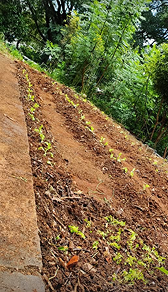
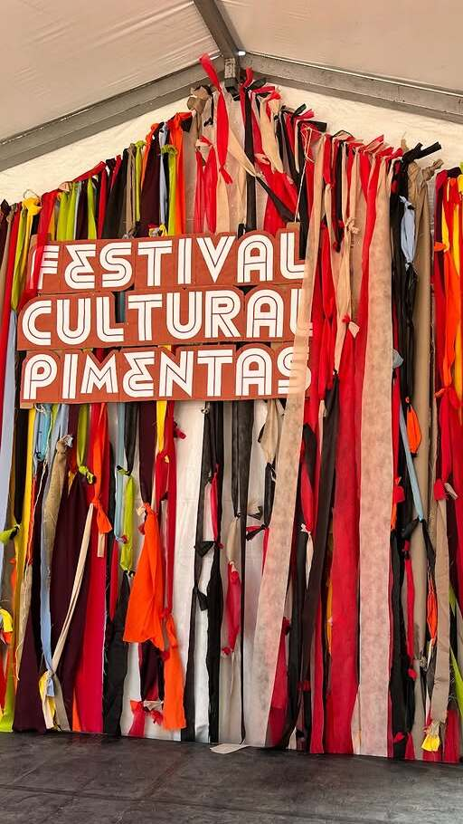

Nossos Projetos e Eventos
HORTA COMUNITÁRIA
Nossa Horta Comunitária é um espaço de aprendizado prático e coletivo. Como parte das nossas oficinas ambientais, alunos e voluntários cultivam alimentos, aprendem sobre reciclagem e promovem a sustentabilidade. É a educação popular indo além da sala de aula, conectando o conhecimento ao território e ao meio ambiente.


FESTIVAL CULTURAL
O Festival Cultural celebra a identidade e os talentos da nossa comunidade. Inclui saraus, Festa Junina e visitas culturais, promovendo arte, expressão e integração. Venha celebrar com a gente!